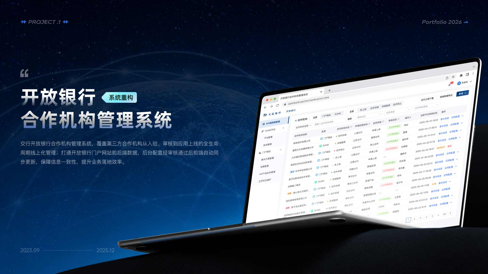
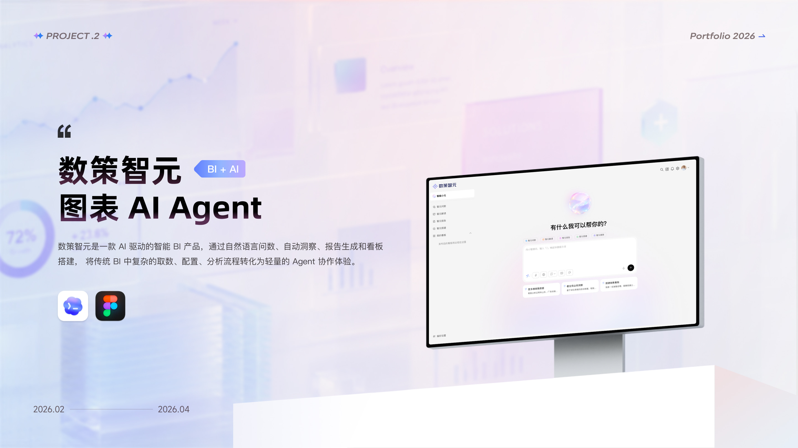
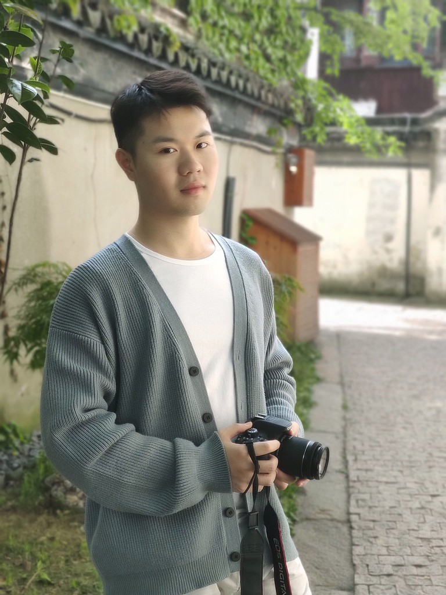

数策智元图表 AI Agent
View03
ABOUT ME
你好， 我是子远
UX / UI DESIGNER
6年体验设计经验，长期关注复杂业务系统、B端 SaaS、开放银行与 AI 产品体验。 我习惯从业务目标、用户路径和落地成本之间寻找平衡，把调研、流程、界面、规范和协同串成可推进的方案。
下载简历
- Role
- 体验设计师 / UX UI Designer
- Education
- 华中师范大学 / 视觉传达设计
- Focus
- B端系统、AI Agent、设计规范、用户研究
体验策略
信息架构
流程设计
交互设计
视觉设计
组件规范
用户调研
可用性测试
AI Workflow
Prompt / Skill
复杂系统体验
梳理复杂业务、权限、审核与配置流程，让后台系统更易理解、更高效完成。
设计规范沉淀
沉淀视觉规范、组件库与交付标准，降低样式偏差并提升产研协同效率。
AI设计工作流
使用 Coze、Codex、Claude Code 等工具构建设计提效流程，并沉淀 Prompt / Skill / Workflow。
用户研究验证
通过用户调研、数据反馈和可用性测试发现问题，提出方案并推动上线验证。